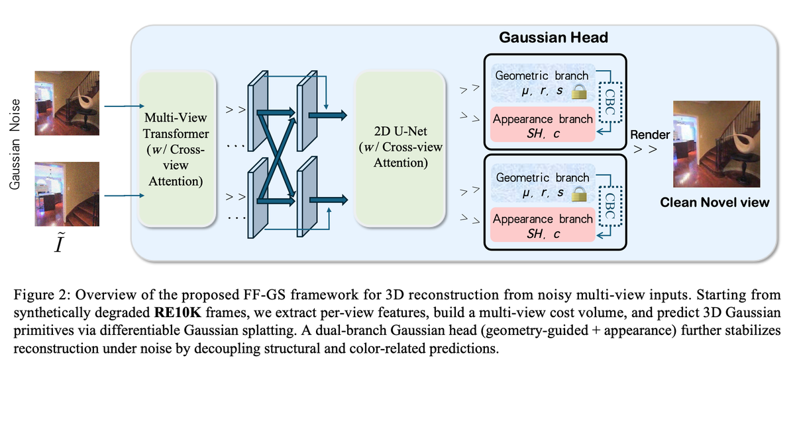
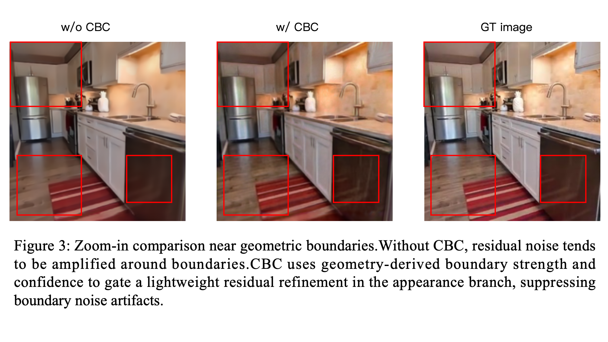
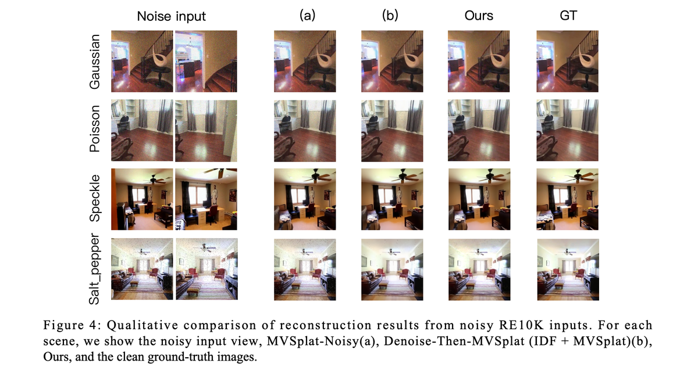
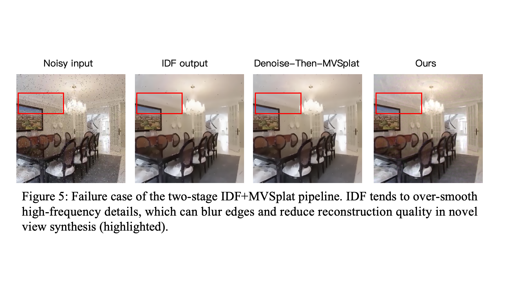
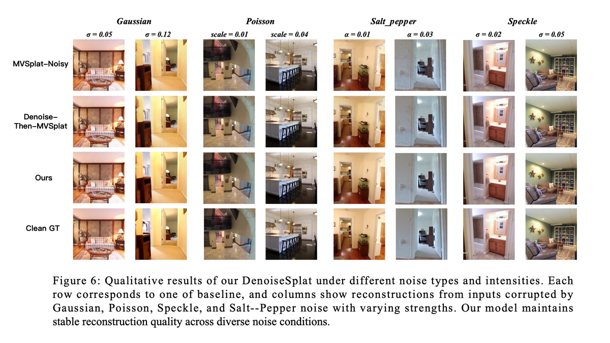

DenoiseSplat
简单摘要


核心创新
这篇工作的第一个关键点，在于它没有停留在模块堆叠层面，而是重新整理了问题的切入方式：本文这一段主要在说明方法设计、实验结果或问题背景；为避免保留成段英文，这里在生成时退化为中文概述，请结合上下文理解。
技术细节
从方法链路看，系统首先处理的是：本文这一段主要在说明方法设计、实验结果或问题背景；为避免保留成段英文，这里在生成时退化为中文概述，请结合上下文理解。这组公式用于定义模型中的变量关系和训练目标。建议先看左侧要预测的对象，再看右侧每一项如何约束优化方向。该公式用于定义核心计算关系。阅读时先看左侧目标量，再看右侧由 I、s、v、v 等变量构成的约束和聚合方式。该公式用于定义核心计算关系。阅读时先看左侧目标量，再看右侧由 G、s、i、i 等变量构成的约束和聚合方式。该公式用于定义核心计算关系。阅读时先看左侧目标量，再看右侧由 I、s、v、R 等变量构成的约束和聚合方式。这组公式用于定义模型中的变量关系和训练目标。建议先看左侧要预测的对象，再看右侧每一项如何约束优化方向。该公式用于定义核心计算关系。阅读时先看左侧目标量，再看右侧由 E、C、B、E 等变量构成的约束和聚合方式。该公式用于定义核心计算关系。阅读时先看左侧目标量，再看右侧由 A、g、A、B 等变量构成的约束和聚合方式。
$$ \bigl\{\tilde{I}^{\text{noise}}_{s,v},\, I^{\text{GT}}_{s,v},\, \mathcal{C}_{s,v}\bigr\}_{v=1}^{V}, \qquad \tilde{I}^{\text{noise}}_{s,v}=\mathcal{D}\!\left(I^{\text{GT}}_{s,v}\right). $$
$$ f_{\theta}:\ \bigl(\{\tilde{I}^{\text{noise}}_{s,v}\}_{v=1}^{V}, \{\mathcal{C}_{s,v}\}_{v=1}^{V}\bigr) \;\longrightarrow\; \bigl(\mathcal{G}_{s}, \{\hat{I}_{s,v}\}_{v=1}^{V}\bigr), $$
$$ \mathcal{G}_{s} = \{g_{i}\}_{i=1}^{N},\quad g_{i} = (\mathbf{x}_{i}, \Sigma_{i}, \alpha_{i}, \mathbf{c}_{i}), $$
$$ \hat{I}_{s,v} = \mathcal{R}(\mathcal{G}_{s}, \mathcal{C}_{s,v}) \in \mathbb{R}^{H\times W\times 3}. $$
$$ \mathcal{L} = \sum_{s}\sum_{v} \bigl( \lambda_{1}\,\lVert \hat{I}_{s,v} - I^{\text{GT}}_{s,v} \rVert_{1} + \lambda_{2}\,\bigl(1 - \mathrm{SSIM}(\hat{I}_{s,v}, I^{\text{GT}}_{s,v})\bigr) \bigr), $$
$$ E = \left\lVert \nabla \delta \right\rVert,\quad C = \max(\mathrm{pdf}),\quad B = \operatorname{norm}(E)\cdot(1-C), $$
$$ \Delta A = g([A, B, C]),\quad A' = A + B \odot \Delta A, $$




实验结论
实验部分首先关心的是：本文这一段主要在说明方法设计、实验结果或问题背景；为避免保留成段英文，这里在生成时退化为中文概述，请结合上下文理解。
理解评价
从整篇论文看，它的真正贡献是：本文这一段主要在说明方法设计、实验结果或问题背景；为避免保留成段英文，这里在生成时退化为中文概述，请结合上下文理解，而不是单纯把扩散模型继续微调。作者把问题落在“分布外驾驶场景如何稳定生成”这个更关键的缺口上。
它最有说服力的地方在于：本文这一段主要在说明方法设计、实验结果或问题背景；为避免保留成段英文，这里在生成时退化为中文概述，请结合上下文理解。这说明论文的方法链路——3D 点云编辑、车辆补全、再到 RL 后训练——是前后闭合的，而不是各模块各自堆叠。
主要局限在于：当前方案仍受算力和时长限制，更适合离线生成而非实时闭环模拟。如果继续往前推进，一个自然方向是把更长时序、更低成本训练和更广泛的 OOD 场景覆盖一起纳入统一评估。
以下相关论文可作为延伸阅读：。
未来可以从数据覆盖、训练效率与跨场景泛化三个方向继续改进，以提升稳定性与可部署性。